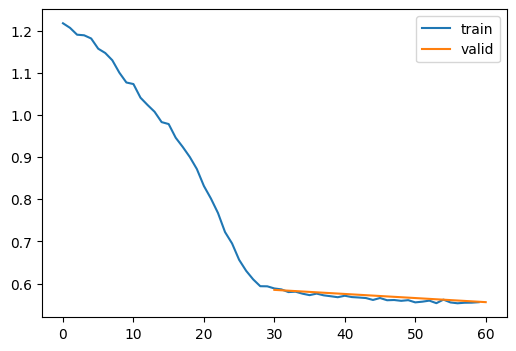

dls = DataLoaders.from_hf("fashion_mnist", nworkers=2)Learner
Building a framework for the deep learning workflow. A large chunk of this code, in particular, was copied from the course notebook because I’m not interested in the software developer aspects of the course. (I am already a professional software developer.)
Adapted from:
- https://youtu.be/0Hi2r4CaHvk?si=GA9KaGAnGOlS_NJO&t=3568
- https://github.com/fastai/course22p2/blob/master/nbs/09_learner.ipynb
At this point, Jeremy points out that copying and pasting code leads to bottlenecks in modeling velocity. We need to start to build a framework to:
- rapidly try things
- figure out where things are broken
- load data quickly
- transparently assign CUDA devices
Data
We’ll start with a wrapper around datasets to make it simpler to work with raw PyTorch.
DataLoaders
DataLoaders (splits, nworkers:int=2, bs=32, collate_fn=<function default_collate>, tdir='/tmp/tmpriwe92on')
Wrapper around huggingface datasets to facilitate raw pytorch work
dls.splits.set_format("torch") # This will be overwritten in a second
batch = dls.peek()
batch["image"].shape, batch["label"].shape(torch.Size([32, 28, 28]), torch.Size([32]))We should also add some helpers to facilitate processing images.
tensorize_images
tensorize_images (dls, feature='image', normalize=True, pipe=[PILToTensor(), ConvertImageDtype()])
Tensorize and normalize the image feature
batchify
batchify (f)
Convert a function that processes a single feature to processing a list of features
T.Normalize?Init signature: T.Normalize(mean, std, inplace=False) Docstring: Normalize a tensor image with mean and standard deviation. This transform does not support PIL Image. Given mean: ``(mean[1],...,mean[n])`` and std: ``(std[1],..,std[n])`` for ``n`` channels, this transform will normalize each channel of the input ``torch.*Tensor`` i.e., ``output[channel] = (input[channel] - mean[channel]) / std[channel]`` .. note:: This transform acts out of place, i.e., it does not mutate the input tensor. Args: mean (sequence): Sequence of means for each channel. std (sequence): Sequence of standard deviations for each channel. inplace(bool,optional): Bool to make this operation in-place. Init docstring: Initializes internal Module state, shared by both nn.Module and ScriptModule. File: ~/micromamba/envs/slowai/lib/python3.11/site-packages/torchvision/transforms/transforms.py Type: type Subclasses:
dls = DataLoaders.from_hf("fashion_mnist", nworkers=0)
dls = tensorize_images(dls)
xb = dls.peek()["image"]
show_images(xb[:8, ...], figsize=(8, 4))xb.min(), xb.max()(tensor(-0.8286), tensor(2.0066))Notice that this unit-normalized
plt.hist(xb.view(-1))(array([13418., 607., 687., 1014., 1057., 1076., 1408., 2054.,
2393., 1374.]),
array([-0.82863587, -0.5451138 , -0.26159173, 0.02193036, 0.30545244,
0.58897448, 0.8724966 , 1.15601861, 1.43954074, 1.72306275,
2.00658488]),
<BarContainer object of 10 artists>)Learner and callbacks
Next, we’ll add a learner with callbacks. Recall, this was our earlier fit function:
fit??Signature: fit(epochs, model, loss_func, opt, train_dl, valid_dl, tqdm_=False) Docstring: <no docstring> Source: def fit(epochs, model, loss_func, opt, train_dl, valid_dl, tqdm_=False): progress = tqdm if tqdm_ else lambda x: x for epoch in range(epochs): model.train() for batch in progress(train_dl): xb, yb = map(to_device, batch) loss = loss_func(model(xb), yb) loss.backward() opt.step() opt.zero_grad() model.eval() with torch.no_grad(): tot_loss, tot_acc, count = 0.0, 0.0, 0 for batch in progress(valid_dl): xb, yb = map(to_device, batch) pred = model(xb) n = len(xb) count += n tot_loss += loss_func(pred, yb).item() * n tot_acc += accuracy(pred, yb).item() * n print( f"{epoch=}, validation loss={tot_loss / count:.3f}, validation accuracy={tot_acc / count:.2f}" ) return tot_loss / count, tot_acc / count File: ~/Desktop/SlowAI/nbs/slowai/convs.py Type: function
To add callbacks, we need a few clever Exception control flow signals
CancelEpochException
Skip to the next epoch
CancelBatchException
Skip to the next batch
CancelFitException
Exit fit context
Then, we define the learner and callback classes
Callback
Callback ()
Modify the training behavior
with_cbs
with_cbs (nm)
Run the callbacks lifecycle at the apropriate time
only
only (f)
If the lifecycle hook is decorated as such, only run this hook and not other callbacks’ hooks
Learner
Learner (model, dls, loss_func=<function mse_loss>, lr=0.1, cbs=None, opt_func=<class 'torch.optim.sgd.SGD'>)
Flexible training loop
This learner delegates all aspects of model training to callbacks, so something like this is neccesary.
TrainCB
TrainCB ()
Training specific behaviors for the Learner
Now that we have the basic scaffolding, we’ll add metrics. Updating and storing state will be handled by torchmetrics, but we’ll define a callback to orchestrate the torchmetrics instances.
MetricsCB
MetricsCB (*ms, **metrics)
Update and print metrics
Finally, we can define a Trainer callback specifically for the autoencoder objective.
class TrainAutoencoderCB(TrainCB):
"""Modify the training loop for the ELBO objective"""
def predict(self, learn):
xb, *_ = learn.batch
learn.preds = learn.model(xb)
def get_loss(self, learn):
xb, *_ = learn.batch
learn.loss = learn.loss_func(learn.preds, xb)Let’s also define some additional useful callbacks and dataset helpers:
ProgressCB
ProgressCB (plot=False, periodicity=10)
Report the progress
before
before (callback_cls:Union[Sequence[Type[__main__.Callback]],Type[__main_ _.Callback]])
Run a callback before another callback
after
after (callback_cls:Union[Sequence[Type[__main__.Callback]],Type[__main__ .Callback]])
Run a callback after another callback
DeviceCB
DeviceCB (device='cpu')
Move tensors and model to the CPU/GPU/etc
to_cpu
to_cpu (x)
fashion_mnist
fashion_mnist (bs=2048, **kwargs)
Helper to use fashion MNIST
DataLoaders??Init signature: DataLoaders( splits, nworkers: int = 6, bs=32, collate_fn=<function default_collate at 0x7f88ed959120>, tdir='/tmp/tmpmsi_fg04', ) Docstring: Wrapper around huggingface datasets to facilitate raw pytorch work Type: type Subclasses:
Putting it all together
model = get_ae_model()
dls = fashion_mnist()
print(dls.splits["train"].format)
cbs = [
MetricsCB(),
DeviceCB(),
TrainAutoencoderCB(),
ProgressCB(plot=True),
]
learn = Learner(
model,
dls,
F.mse_loss,
lr=0.01,
cbs=cbs,
opt_func=torch.optim.AdamW,
).fit(2){'type': 'custom', 'format_kwargs': {'transform': <function DataLoaders.with_transforms.<locals>.map_ at 0x7f885457b1a0>}, 'columns': ['image', 'label'], 'output_all_columns': False}| loss | epoch | train |
|---|---|---|
| 1.071 | 0 | train |
| 0.955 | 0 | eval |
| 0.908 | 1 | train |
| 0.854 | 1 | eval |
CPU times: user 3.98 s, sys: 2.42 s, total: 6.4 s
Wall time: 11.2 sdef viz(model, xb):
xb = xb.to(def_device)
pred = model(xb)
paired = []
for i in range(min(xb.shape[0], 8)):
paired.append(xb[i, ...])
paired.append(pred[i, ...])
show_images(paired, figsize=(8, 8))xbt, _ = dls.peek("test")
viz(model, xbt)
Still not good, but less code!
I don’t really like the idea of delegating the core training functions to callbacks, so we can just implement them here:
TrainLearner
TrainLearner (model, dls, loss_func=<function mse_loss>, lr=0.1, cbs=None, opt_func=<class 'torch.optim.sgd.SGD'>)
Sane training loop
This works pretty similarly
class AutoencoderTrainer(TrainLearner):
def predict(self):
xb, *_ = self.batch
self.preds = self.model(xb)
def get_loss(self):
xb, *_ = self.batch
self.loss = self.loss_func(self.preds, xb)
cbs = [MetricsCB(), DeviceCB(), ProgressCB(plot=True)]
learn = AutoencoderTrainer(
get_ae_model(),
dls,
F.mse_loss,
lr=0.01,
cbs=cbs,
opt_func=torch.optim.AdamW,
).fit(2)| loss | epoch | train |
|---|---|---|
| 0.950 | 0 | train |
| 0.585 | 0 | eval |
| 0.566 | 1 | train |
| 0.556 | 1 | eval |

CPU times: user 1.24 s, sys: 1.37 s, total: 2.61 s
Wall time: 8.12 sCan we improve the reconstruction? Let’s implement a simple momentum.
MomentumCB
MomentumCB (momentum=0.85)
Modify the training behavior
cbs = [MetricsCB(), DeviceCB(), ProgressCB(plot=True), MomentumCB()]
learn = AutoencoderTrainer(
get_ae_model(),
dls,
F.mse_loss,
lr=0.01,
cbs=cbs,
opt_func=torch.optim.AdamW,
).fit(2)
viz(model, xbt)| loss | epoch | train |
|---|---|---|
| 1.254 | 0 | train |
| 1.209 | 0 | eval |
| 1.184 | 1 | train |
| 1.148 | 1 | eval |
CPU times: user 1.46 s, sys: 1.41 s, total: 2.87 s
Wall time: 8.6 s
Not especially impressive.
What about using the automated learning rate finder?
show_doc
show_doc (sym, renderer=None, name:str|None=None, title_level:int=3)
Show signature and docstring for sym
| Type | Default | Details | |
|---|---|---|---|
| sym | Symbol to document | ||
| renderer | NoneType | None | Optional renderer (defaults to markdown) |
| name | str | None | None | Optionally override displayed name of sym |
| title_level | int | 3 | Heading level to use for symbol name |
LRFinderCB
LRFinderCB (gamma=1.3, max_mult=3)
Find an apopriate learning rate by increasing it by a constant factor for each batch until the loss diverges
learn = AutoencoderTrainer(
get_ae_model(),
dls,
F.mse_loss,
lr=1e-5,
cbs=cbs,
opt_func=torch.optim.AdamW,
).lr_find()
20.00% [2/10 00:07<00:29]
| loss | epoch | train |
|---|---|---|
| 1.294 | 0 | train |
| 1.068 | 1 | train |
56.67% [17/30 00:01<00:01 1.987]
/home/jeremy/micromamba/envs/slowai/lib/python3.11/site-packages/torchmetrics/utilities/prints.py:43: UserWarning: Encountered `nan` values in tensor. Will be removed.
warnings.warn(*args, **kwargs) # noqa: B028It looks like 1e-2 is a good learning rate.
cbs = [MetricsCB(), DeviceCB(), ProgressCB(plot=True), MomentumCB()]
learn = AutoencoderTrainer(
get_ae_model(),
dls,
F.mse_loss,
lr=1e-2,
cbs=cbs,
opt_func=torch.optim.AdamW,
).fit(2)
viz(model, xbt)| loss | epoch | train |
|---|---|---|
| 0.905 | 0 | train |
| 0.625 | 0 | eval |
| 0.592 | 1 | train |
| 0.563 | 1 | eval |
Again, not especially impressive.
We’ll write some tools to diagnose model issues in the next notebook.